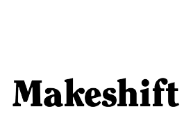

CLIENTS


- 
Experienced producer for digital non-fiction projects. Skilled in all aspects of production, including producing, shooting and editing. Proven track record in turning budgets into engaging and sharable content in a timely manner. Extensive international work experience in 13 countries, along with broad personal travel.
Type: Wed Documentary (2014)
Role: Shooter
This documentary series was produced to accompany the release of Mario Batali's latest book, "America--Farm To Table." The videos give viewers an inside look at what it takes to produce fresh, seasonal and local food.
Type: Three-Part Online Documentary Series (2012)
Role: Producer / Shooter / Assistant Editor
This digital video series offers a behind-the-scenes take of Bamboozle music festival (a Live Nation production), featuring dozens of bands on stage and in interviews, including Wiz Khalifa, Dashboard Confessional, New Found Glory and Lil Wayne.
Type: Web Project for "Lives with Meredith Vieira" (2013)
Role: Producer / Shooter / Editor
Laverne Cox, star of the Netflix Series "Orange is the New Black," is a transgender advocate and
2013 Courage Award honoree. In this web episode of "Overshare," Cox tells the moving story of her gender transformation, shares never-before-seen pictures and talks about her rising career as actress and advocate.
Type: Online Video Series (2013)
Role: Producer / Shooter / Editor
Wall Street Journal's "Startup of the Year" profiled dozens of startups as they built their businesses with coaching and criticism from some of the world's most successful entrepreneurs and innovators. The web series included more than 100 videos and featured industry leaders such as Richard Branson, Will.I.Am, Tory Burch and Google's Ray Kurzweil, among many others.
Type: Online Documentary (2013)
Role: Producer / Director / Shooter / Editor
"Polar Vision" chronicles Alan Locke's 570-mile, 43-day trek across the coast of Antarctica to the South Pole, a feat that makes him the first visually impaired person to complete the journey. Filming took place in Nunavut, Canada; Punta Arenas, Chile; London; Boston, Mass.; and on hand-held cameras in Antarctica.
Type: Animation Video (2014)
Role: Producer / Script / Audio
For this video, I had the challenge of bringing a print story to life. Using my network of talented friends, I was able to add animation, original art and music to accompany a recording I made over the phone with the Costa Rican driver.